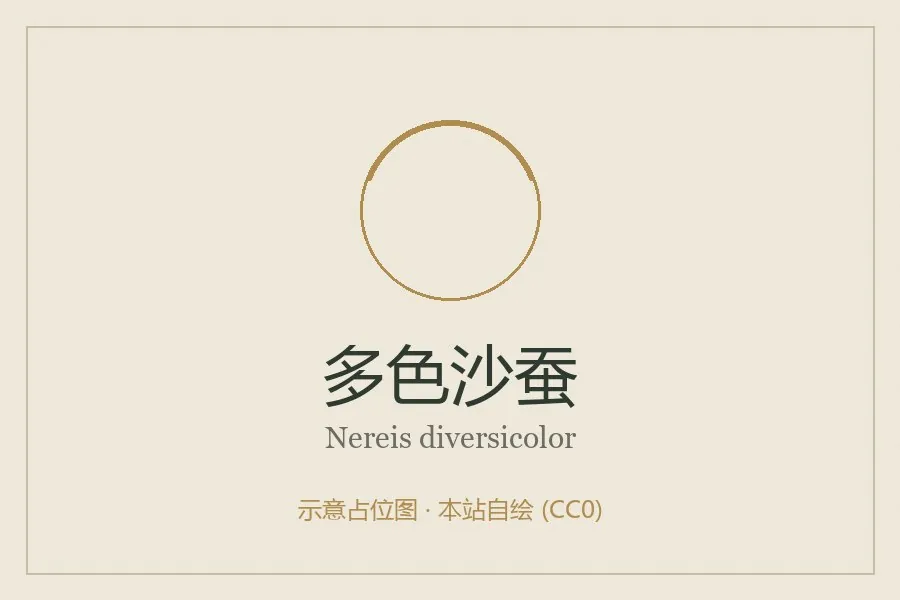

其他无脊椎动物 · 动物界
多色沙蚕 Nereis diversicolor

体色多变、栖于河口泥滩的多毛类，掘洞而居，是鱼类和涉禽的重要饵料，也用作钓饵与养殖饲料。
- 分类
- 门环节动物门纲多毛纲目叶须虫目科沙蚕科属沙蚕属
- 栖息环境
- 河口泥滩、盐沼与沙泥底质，掘洞而居
- 地理分布
- 北大西洋东岸，自波罗的海、地中海至北非
- 保护级别
- 常见种，无保护级别；污染与采捕是压力来源
物种志
多色沙蚕的体长可达十至二十厘米，体呈长条形，体节众多，每节有发达的疣足，疣足上生有刚毛。体色变化大，从淡黄、橙红到墨绿、黑褐都有，同一片泥滩上能看到不同颜色的个体，多色之名由此而来。头部有触手和触须，口内有可伸出的颚，捕食时能迅速咬住小动物。
它分布于北大西洋东岸的河口和盐沼，从波罗的海到地中海、北非，栖息在泥滩和沙泥底质中，掘洞而居，洞口常呈 U 形。它是杂食性的，取食沉积物中的有机质、藻类和小型动物。它是河口食物网的关键环节，为鱼类和涉禽提供食物，也被大量采捕用作钓饵和养殖饲料。它对污染敏感，常被用作河口环境监测的指示生物。
形态与习性
- 体长可达十至二十厘米
- 体色淡黄、橙红至墨绿，变化很大
- 疣足每节一对，生有刚毛
- 洞穴U 形洞穴，栖于泥滩
- 食性有机质、藻类与小型动物，杂食
- 用途钓饵与养殖饲料，亦为环境指示种
趣味知识
- 同一片泥滩上的沙蚕颜色能差很多，绿的、红的、黄的都有。
- 它的洞口常是两个一组，下面是连通的 U 形管道。
- 钓鱼人把它挂在钩上，扭动的身体对鱼来说就是致命诱惑。